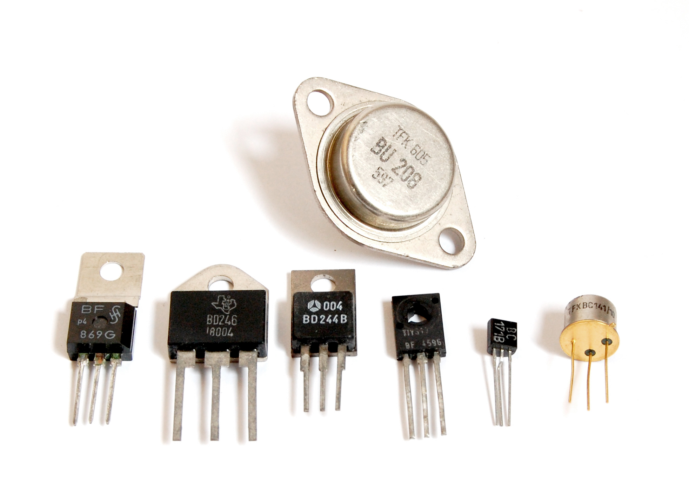

Transistor
Ein Transistor ist ein elektronisches Halbleiterbauteil, das als Schalter oder Verstärker verwendet wird. Er bildet die Grundlage moderner Elektronik und ist in praktisch jedem elektronischen Gerät zu finden. Transistoren können Stromfluss steuern und regulieren, indem sie den Widerstand in einem Stromkreis abhängig von einer kleinen Steuer- oder Eingangsspannung ändern.

Funktionsweise
Ein Transistor hat drei Anschlüsse: Basis (B), Kollektor (C) und Emitter (E). Die Funktionsweise basiert auf der Steuerung des Stromflusses zwischen dem Kollektor und dem Emitter durch einen kleinen Steuerstrom an der Basis.
Es gibt zwei Haupttypen von Transistoren:
Bipolartransistoren (BJT): Sie bestehen aus zwei p-n-Übergängen und arbeiten mit Ladungsträgern (Elektronen und Löchern). Ein kleiner Basisstrom steuert hier den größeren Kollektor-Emitter-Strom. BJTs gibt es in zwei Varianten:
- NPN-Transistor: Ein Stromfluss von der Basis zum Emitter aktiviert den Stromfluss vom Kollektor zum Emitter.
- PNP-Transistor: Der Basis-Emitter-Strom fließt in entgegengesetzter Richtung, was den Kollektor-Emitter-Strom aktiviert.
Feldeffekttransistoren (FET): Sie steuern den Stromfluss mit einem elektrischen Feld anstatt mit einem Stromfluss an der Basis. Der Gate-Anschluss reguliert den Kanalstrom zwischen Drain und Source. Zu den wichtigsten Typen gehören:
- JFET (Junction FET): Der Stromfluss zwischen Drain und Source wird durch die Gate-Source-Spannung reguliert.
- MOSFET (Metal-Oxide-Semiconductor FET): Ein isolierter Gate-Anschluss steuert den Stromfluss präziser und benötigt nur geringe Steuerspannungen. MOSFETs sind weit verbreitet in digitalen und analogen Schaltungen.
Transistor-Arten und Anwendungen
Transistoren werden in unterschiedlichen Ausführungen und Materialien gefertigt, je nach Anwendungsbereich:
- Leistungstransistoren: Für Anwendungen mit hohen Strömen und Spannungen, z. B. in der Motorsteuerung.
- HF-Transistoren: Optimiert für hohe Frequenzen, in Radiosendern oder Mobiltelefonen.
- Digitaltransistoren: Eingesetzt in digitalen Schaltungen und Logikgattern.
Transistoren sind die Grundlage für Verstärker, Schalter und Oszillatoren und haben die Elektronik revolutioniert, insbesondere durch die Möglichkeit, Millionen von ihnen auf einem einzigen Mikrochip zu integrieren.